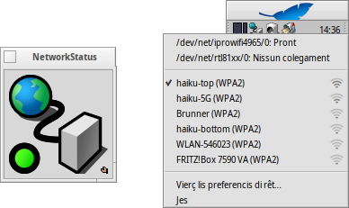

Stât de Rêt
Stât de Rêt
| Deskbar: | ||
| Posizion: | /boot/system/apps/NetworkStatus | |
| Impostazions: | nissune |
“Stât de Rêt” al mostre il stât des tôs conessions di rêt. Se nol è ancjemò in esecuzion, inviant la applet ti domandarà se la à di vierzisi in modalitât barcon o “vivi” tal Deskbar. In modalitât barcon tu puedis ridimensionâ la icone ridimensionant il barcon e doprâ la mantie dal replicant par strissinalu sul scritori.
Pardut là che tu lu instalis, al ven doprât cuntun menù contestuâl, vie clic diestri.

La prime sezion e conten i nons di ducj i dispositîfs di rêt e il lôr stât. Fasint clic suntune di chês vôs al fâs vignî fûr un barcon che al mostri lis sôs direzions di IP, trasmission e mascare di rêt.
Sot si à une liste cun dutis lis rêts cence fîi cjatadis cul prin adatadôr wireless e un indicadôr de fuarce dal lôr segnâl. Bute un vole al Laboratori: rêts cence fîi par vê plui informazions su ce mût configurâ une conession.
Par ultin, tu puedis fâ par cambiâ la tô configurazion de rêt o par jessî de applet cun .
Iconis di stât
| Pront | Il colegament al è stât stabilît. | ||
| Daûr a configurâ | La conession e je in cors. | ||
| Nissune configurazion di stât | E mancje cualchi impostazion (controle configurazion dal IP). | ||
| Nissun colegament | No si à nissune conession fisiche (al è probabil che il cabli de rêt nol sedi tacât e lis rêts cence fîi no sedin disponibilis unavailable). | ||
| - | No si à nissun adatadôr di rêt disponibil (se tu sês sigûr che almancul un al sedi tacât, alore forsit no esistin ancjemò i driver). |